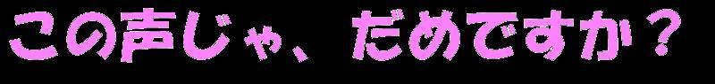

Ｈｅ・・ヘリウムガス、原子番号２の第１８族に属する希ガス原子。誰でも聞いたことはあるものの実際触れる機会は少ないこの原子、僕にはちょっと特別な思い出があります。高校２年の秋頃、上級生の卒業文集にクラスのことを載せる機会があったんです。たいていそういう時はどこもクラス内ランキングを載せることがおおかったんですね、
「クラスで１番〜な人」みたいなやつ。それで僕のクラスもそれにしようってことになってアンケートとることになったんです。ちょうどその頃僕はクラスのとある男子Ｈとちょっとしたことで言い争ってまして、まあ理由はどこにでもあるような
「お前より俺の方が絶対もてる」お互いがこの主張を譲らなかったんですね。まあ俺から見ればそいつは、
勝ち目もないのに勝負を挑む第二次大戦の旧陸軍参謀にしか見えなかったわけですがまあ現実を見せてやるのもおもしろいと思い、そのアンケートに加えてもらうことにしたんですよ。質問はきわめて単純、
僕とＨ、彼氏にするならどっちですか？そういった内容。もちろん回答者はクラスの女子のみ。深く考えると答えづらくなるだろうからとどっちかを選ぶだけのものだったんです。そんな簡単な気持ちで行ったアンケートで僕の高校生活に
大きな傷跡思い出を作ることになるとは思いもしませんでした。ここまで読んだみなさんは１０人中８人くらいが、
それでボロ負けだったんだろ、オチ読めてるよそう思ったと思いますが、
甘いです僕の人生
人に先読みされるようにできてません、そのアンケートは勝ったんですよ、まあちゃんと
裏工作人に優しく接してればそう負けたりはしません。まあそこはいいんです、
もともと勝ち戦でしたから。問題はその集計の時に起きました、集計は友達がやってて僕も一緒に見てたんですよ、たいていの紙はどちらかの名前に○がついてるだけ、まあ当たり前なんですが。集計も終盤にさしかかるころ、１枚何か他のとは違うのが出てきたんです。その紙はＨの方を選んでたんですが、選び方が普通じゃありませんでした、
Ｈの名前の周りに花が描かれてるんですで僕の名前の下にちっちゃく、
あたし的になんかコワイ見つけた時怒りがこみ上げる前に、驚きあきれ物も言えませんでした。だってまず第一に言いたいのが、
誰が理由を聞いた！？だいたいクラス内のお遊び的アンケート、しかも理由を求めていない簡単なものなのに
わざわざ理由を明かしてくださる、しかもその理由を聞いて誰もいい気分にならない、そして集計が男の時点でそれが俺の耳にも入るだろう事が分かっていて、それでも自ら静かな波間をぶち壊し
ディープインパクト並の津波を引き起こそうとするあなたの方が、
僕的にはよっぽどコワイこれ匿名アンケートだったんですがここまで書かれちゃ僕も我慢できません、僕のクラス内権力をフルに使い（仲のいい女の子に捜査を頼む）、犯人を特定、そしたら別に普段すれちがってもおはようとあいさつもすることもない接点の人、おいお前、
俺がいったいなにをしたでまた友達を通して理由を聞いてみると、
声がキライ
・・・・おいちょっと待ていやほんとありえねえって。なんだ
声がキライって？俺にしゃべるなと？確かに俺はよくしゃべるよ、
綾乃さんの俺に対する第一印象も
なにこのうるさい人は？だったそうですけど。だから直接話してなくても僕の声が耳に入るのはよくあることなんですけど、もう俺の存在を全否定するようなこの発言、こんな小学生がいじめをする時のような理不尽な理由、まかり通ってよいものか？
否！断じて否である！！といっても俺は男の子、さすがに暴力といった方法を用いるのも気に入らない、とりあえず俺のプライドを保持できる対処法をと考えたわけです。傷ついたこの心、どうセンスに満ちた復讐してやろうかと考え、そうです、行きついた結果が、
ヘリウムガス使おうこれでした。声がキライならお望みどおり変えてやるよ、と。それから東急ハンズで９８０円のヘリウムガスを購入、次の日それをカバンに入れ学校へ。それで声を変えて、その子に、
いつもより何オクターブも高い声で言ってやろうと思いました。実際本人の目の前でやってしまうとこっちの負けですから、僕は大人らしく友達の前で実行するだけにとどめておきました。でも意外にヘリウムガスの量は少なく、
３回試しただけでガス切れ、まあこれで僕のプライド保たれた訳なので僕としてはめでたしめでたし。
追記、この場を借りて謝罪したいことがあります。卒業式の時のことなんですが、俺に
声キライ発言したその子、卒業式で代表として答辞読んだんですね、まあこれがよく書かれまして、先生方には感動だったんでしょうけども、人に「あなたの声キライ」なんていうような人がいくらいい答辞を読み上げようと、
僕には納得できない
答辞読んでるの聞いてると、
「みんながんばった文化祭」
「とても仲良かったみんな」
「みんなと過ごせた学校生活」
「みんな・・大事な思い出です」
・・・今まで生きてきた中で一番聞いてて腹が立つ答辞でした。お前には
人に声キライって言ったのが大事な思い出か？面と向かって問いただしたかったです。で、続き聞いてるとなんか自分が学校生活の中心のような、ヒロインのようなふうに聞こえてきて・・だんだんむかついてきて、その場でぼそっと言っちゃったんですね、
・・名演技じゃね口に出てしまった時、内心「しまった」って思ったんですけど、その思いは２秒で吹き飛びました、だって、前の方に立ってる友達Ｔ君、俺の発言聞いて、
何度もうなずいてるんですから！！それを見た僕は他にもそう思ってる人いるんだと確信し、ちょっと調子に乗って答辞に突っ込みいれてました（だってそのたびにＴ君うなずくし）そして卒業式も終わり教室に戻る途中、ふと見るとＴ君友達何人かにからまれてます、
「おい！卒業式の最中ブツブツうるさいんだよ！」ええ、Ｔ君完璧な濡れ衣です、だって彼は俺の発言にあいづちくれてただけで、
一言もしゃべってないんだから思えばＴ君ことあるごとに矛先向けられてたね、思い出します、
上着窓の近くに置いといて授業中に
担任に窓から外に投げ捨てられてたＴ君、
ウシガエルがうるさい時
「Ｔ、うるさい！」って言われてたＴ君、
僕の
声キライってのが大事な思い出だとしたら、彼の高校生活は
大事な思い出だらけでしょう。
話がずれましたが、もう一度言っておきます、卒業式ブツブツうるさかったのはＴ君ではありません、
僕です気分を害したみなさん、ごめんなさい。